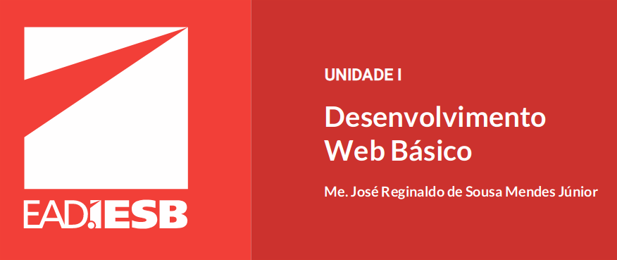

Aluno: Lucas Gonçalves de França
Matricula: 1986101241
Curso: Análise e Desenv. de Sistemas
Professor: Me. José Reginaldo de Sousa Mendes Júnior
Link do template originalEsté site também serviu de revisão sobre todo o conteúdo ministrado durante o modulo.
#A Plataforma JEE
Java Enterprise Edition (JEE) é um padrão de desenvolvimento em camadas paraconstruir aplicações corporativas seguras, distribuídas, escaláveis e confiáveis.
Ele disponibiliza uma série de serviços de infraestrutura de alto nível que buscam reduzira complexidade do desenvolvimento de aplicações desse porte.
A plataforma Java EE 7 é composta por:
- GlassFish Open Source Edition 4.1: Um servidor de aplicação de referência com 100% dasfuncionalidades especificadas pela plataforma implementadas.
- Java EE 7 Code Samples: Exemplos de código das melhores práticas de desenvolvimentode aplicação JEE
- Java EE 7 API Documentation: Documentação das API da plataforma JEE.
- Java EE 7 Tutorial: Uma guia de desenvolvimento de aplicações corporativas para oservidor GlassFish.
Perceba que a plataforma JEE é mais uma especificação de um conjunto de componentes doque uma implementação em si. Tanto que existem vários servidores de aplicação, comoGlassFish da Oracle, Tomcat da Apache e JBoss da RedHat, que implementam essa plataforma.Portanto, para desenvolver uma aplicação corporativa, precisamos escolher uma dessasimplementações.Basicamente a plataforma JEE pode ser dividida em duas partes:
1) Um conjunto de bibliotecasou APIs;
2) Um ambiente de execução
#Contêineres
Contêineres são servidores de objetos que oferecem serviços e infraestrutura para aexecução de uma aplicação corporativa. Neles, são configurados os recursos quedesejamos disponibilizar a nossas aplicações, como, por exemplo, um pooling deconexão para gerenciar as conexões com um banco de dados.
#Contêineres
Contêineres são servidores de objetos que oferecem serviços e infraestrutura para aexecução de uma aplicação corporativa. Neles, são configurados os recursos quedesejamos disponibilizar a nossas aplicações, como, por exemplo, um pooling deconexão para gerenciar as conexões com um banco de dados.
#MVC
O padrão MVC divide uma aplicação em três tipos de componentes: a visão, o modelo e ocontrolador. A visão é responsável por apresentar a informação ao usuário. O modeloarmazena e recupera essa informação. E o controlador faz a mediação das requisições dousuário, convertendo-as em comandos para a visão e/ou modelo. Apesar de ele ter sidodesenvolvido originalmente para as aplicações desktop, o MVC foi amplamente adaptado paracompor a arquitetura base de nossas aplicações web.O objetivo desse padrão é separar a lógica de negócio (modelo) da interface do usuário (visão)e do controle de fluxo da aplicação (controlador), permitindo que uma mesma lógica possa seracessada e visualizada através de várias interfaces. Para entender como uma aplicação web éconstruída com o padrão MVC, vamos elencar os elementos dessa aplicação.
#Tomcat
Contêineres são servidores de objetos que oferecem serviços e infraestrutura para aexecução de uma aplicação corporativa. Neles, são configurados os recursos quedesejamos disponibilizar a nossas aplicações, como, por exemplo, um pooling deconexão para gerenciar as conexões com um banco de dados.
#O Ciclo de Vida do Servlet
Um servlet é um pequeno programa Java que é executado em um contêiner Web. Maisprecisamente, um módulo executado dentro de um servidor orientado por chamadas do tiporequesição-resposta (request-response) típicas do protocolo HTTP. A API Java Servlet permiteque servidores Web tenham suas funcionalidades estendidas através de programas Java.
O ciclo de vida de um Servlet pode ser observado através do fluxo:
Inicialização → Execução → Destruição#A Classe HttpServlet
Para criamos um Servlet utilizando o protocolo HTTP, devemos criar uma subclasse deHttpServlet. Em cada operação do protocolo HTTP, temos um método na classeHttpServletque pode ser sobrescrito.
#A classe HttpSession
Uma característica do protocolo HTTP é que ela não guarda o estado de um sessão, ou seja, acada requisição-resposta é criada uma nova conexão TCP/IP. Porém, existem diversas ocasiõesonde precisamos guardar temporariamente dados importantes manipulados pelos usuários deuma aplicação Web. Por exemplo, produtos selecionados em um carrinho de compras,configurações pessoais do usuário, etc.
Um contêiner Web utiliza algumas estratégias para gerenciamento de sessão baseadas natroca de tokens entre cliente e servidor. São elas
Reescrita de URL: o token de identificação da sessão é transmitido em todas as URLs.Isso quer dizer que o servidor adiciona o token como parâmetro da URL em todas aspáginas que são geadas automaticamente. E, sempre que o cliente envia uma URL para oservidor, essa URL deve obrigatoriamente conter o token para que o servidor possareconhecê-la.
Campos ocultos de um formulário (hiddenfields): a URL do servidor adiciona camposocultos (hidden) em cada formulário. Dessa maneira, quando o cliente enviar umarequisição, o token já estará embutido no formulário.
Cookies: representam uma das maneiras mais refinadas de troca de tokens entre clientee servidor. Ao contrário das implementações apresentadas anteriormente, cookiespodem ser trocados através do cabeçalho da requisição e da resposta
#A Interface HttpServletRequest
A interface HttpServletRequest estende a interface ServletRequest, provendo métodosespecíficos para o protocolo HTTP. O contêiner Web cria um objeto HttpServletRequest epassa como argumento para os métodos de serviço (doGet, doPost) da classe Servlet.
#A Interface ServletContext
A interface SevletContext define os métodos necessários para que um servlet se comuniquecomo um contêiner. Ela permite, por exemplo, obter parâmetros de inicialização da própriaaplicação ou trocar objetos entre servlets da mesma aplicação.
#A Interface Filter
A interface Filter permite a criação de um tipo de servlet especial, em que temos uma ou maisoperações que devem se executadas antes que determinados componentes sejam executados.Por exemplo, podemos configurar um filtro que verifica se o usuário já está autenticado ou não.Se o usuário já estiver locado, a requisição é redirecionada para o recurso solicitado. Senão,redireciona para uma página de login.
#Enviando Erros HTTP
Outra maneira de indicarmos que aconteceu um erro é através do objetoHttpServletResponse, no qual chamaremos um dos métodos a seguir.
#O Ciclo de Vida da JSP
JavaServer Pages (JSP) são páginas HTML que podem conter código Java. É uma soluçãosimilar ao Active Server Pages (ASP) da Microsoft.
Vejamos como é o ciclo de vida de um JSP:
Transformação → Compilação → Inicialização → Execução → Destruição
Na primeira vez que o JSP é chamado, ele é transformado em um servlet. Depois de compilado,ele segue o fluxo de um servlet comum